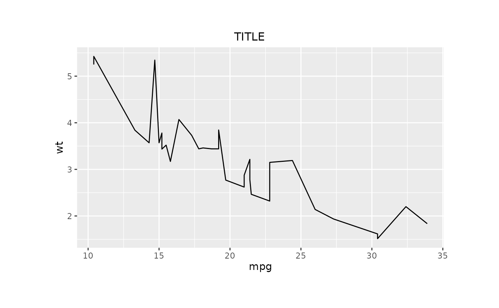
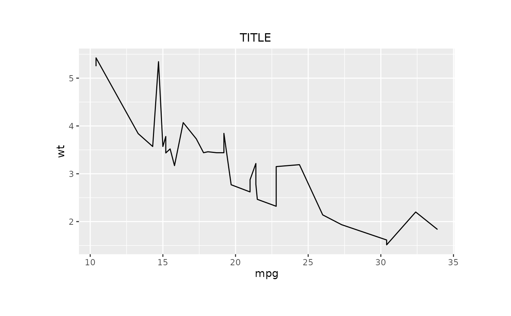

print-gridifyClass-method.RdMethod for printing a gridifyClass object.
Prevents the show method from being triggered.
# S4 method for class 'gridifyClass'
print(x, ...)Invisibly a grid call used to draw the object.
# (to use |> version 4.1.0 of R is required, for lower versions we recommend %>% from magrittr)
library(magrittr)
g <- gridify(
object = ggplot2::ggplot(data = mtcars, ggplot2::aes(x = mpg, y = wt)) +
ggplot2::geom_line(),
layout = simple_layout()
) %>%
set_cell("title", "TITLE")
print(g)

# grid call is returned when printed to a variable
gg <- print(g)
# unevaluated grid code
gg
#> grid::gTree(children = do.call(grid::gList, list(grid::grobTree(grid::editGrob(OBJECT,
#> vp = grid::viewport(height = grid::unit.pmax(grid::unit(1,
#> "npc"), grid::unit(1, "inch")), width = grid::unit.pmax(grid::unit(1,
#> "npc"), grid::unit(1, "inch")))), vp = grid::viewport(layout.pos.row = 2,
#> layout.pos.col = 1)), grid::grobTree(grid::textGrob(label = "TITLE",
#> x = 0.5, y = 0.5, hjust = 0.5, vjust = 0.5, rot = 0, gp = grid::gpar()),
#> gp = grid::gpar(), vp = grid::viewport(layout.pos.row = 1,
#> layout.pos.col = 1)))), vp = grid::viewport(name = "lyt",
#> x = grid::unit(0.1, "npc"), y = grid::unit(0.1, "npc"), just = c("left",
#> "bottom"), width = grid::unit(1, "npc") - grid::unit(0.1,
#> "npc") - grid::unit(0.1, "npc"), height = grid::unit(1,
#> "npc") - grid::unit(0.1, "npc") - grid::unit(0.1, "npc"),
#> gp = grid::gpar(), layout = grid::grid.layout(nrow = 3L,
#> ncol = 1L, heights = grid::unit(c(0.42, 1, 0), c("cm",
#> "null", "lines")), widths = grid::unit(1, "npc"))))
#> attr(,"env")
#> <environment: 0x55dfb95d05e0>
# evaluate the code
grid::grid.draw(eval(gg, envir = attr(gg, "env")))
# or
OBJECT <- attr(gg, "env")[["OBJECT"]]
grid::grid.draw(eval(gg))
